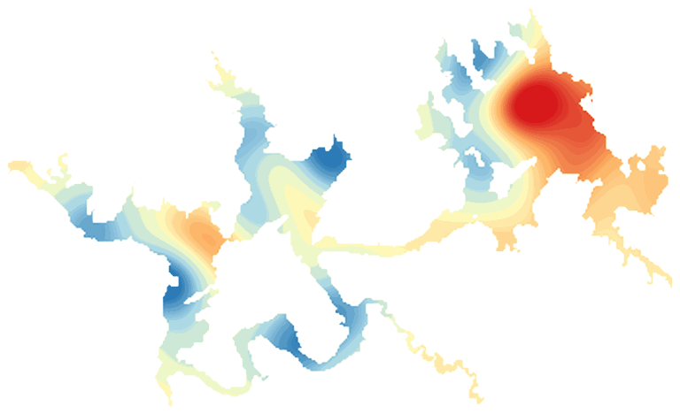

LakeScope › UT
Lake Powell today
Updated 2026-11-26 - Atlas Labs
49°F water, level rising, 40 ft below normal, calm this morning.
Water level
3541.10 ft
Bureau of Reclamation - 2026-11-24
7-day trend: rising (+0.85 ft). Compared with normal for this date: -40.0 ft (same weeks, 2016-2025).
Water clarity and algae
No fresh view yet Clouds have hidden the lake lately.
Surface temperature
49°F
seen from space on 2026-11-22

Ice
Open - 0% ice cover
Estimate from weather and satellite, not a measurement. Check the ice yourself before going on it.
Weather, next 3 days
| Day | Sky | High / low | Wind | Rain |
|---|---|---|---|---|
| Thursday | Sunny | 52 / 39°F | 1 mph N | 0% |
| Friday | Partly Sunny | 54 / 42°F | 1 mph N | 0% |
| Saturday | Mostly Sunny | 61 / 42°F | 6 mph WSW | 0% |
Sunrise 07:15 - sunset 17:09 - Full moon. National Weather Service.
Get the LakeScope app: alerts and the 3-D view of Lake Powell